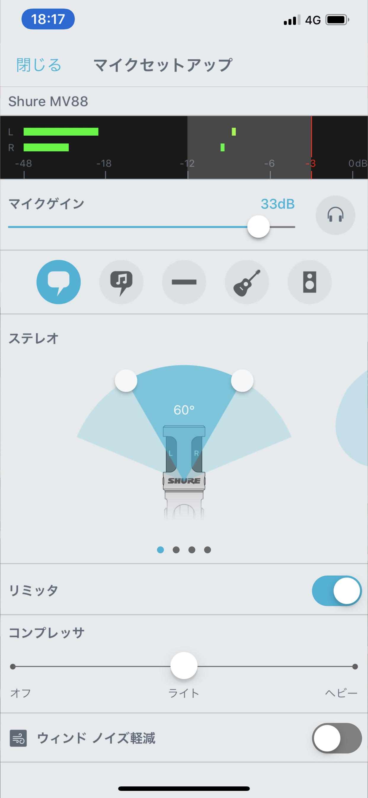

![ロゴ]()
【ステマなし】YouTubeでおすすめな撮影機材は３つある【必要最低限】

YouTube撮影におすすめな機材を知りたい人「これからYouTubeを始めたいけど、どういった機材を用意すればいいんだろう…？ 必要最低限の機材で、高品質な動画を作りたいです。」
こういった疑問に答えます。
本記事の内容
- YouTubeでおすすめな撮影機材は、３つある
- YouTubeの撮影機材よりも、大切なこと
この記事を書いている僕は、YouTubeでの配信歴が４ヶ月ほど。
チャンネル登録は３万人を超えることができ、生計が立つようになりました。
» マナブ – YouTube
今回は「YouTube撮影におすすめな機材」を紹介します。
実際に僕が使っている商品を、ステマなしでお見せしますね。
YouTubeでおすすめな撮影機材は、３つある
- その①：iPhoneXS
- その②：SHUREマイク
- その③：自撮り棒
完成イメージは、こちらです
ほとんど編集していないシンプルな動画ですが、品質は問題ないかなと思っています。
まず目指すべきはこれくらいの品質かと思い、必要機材を解説します。
更新情報：2019年7月15日
撮影機材を少しアップデートしました。最新の情報は「YouTubeでオススメな撮影機材の紹介」で紹介しています。
その①：iPhoneXS
iPhone XS
iPhone XSは、オールスクリーンのデザイン、2つのサイズから選べるSuper Retinaディスプレイ、TrueDepthカメラ、Face ID、デュアルカメラシステム、A12 Bionicチップを持っています。
動画撮影用です。しかも、僕の場合は「インカメラ」で撮影をしており、iPhoneXSの画質は神ですね。ちょっとお値段は張りますが、買って後悔ゼロです。
手ブレ補正も、素晴らしい
iPhoneXSは手ブレ補正も素晴らしく、例えば下記の動画をどうぞ。
動画の最初は「自撮り棒を持ちながらの撮影」でして、後半は「自撮り棒でiPhoneXSを固定しつつ歩いて撮影」という感じです。
世の中には手ブレ補正の「スタビライザー」という機材が存在しますが、、、ぶっちゃけiPhoneXSでも十分だと思いますよ。
ちなみに、手ブレ補正の修正アプリもありでして、下記のツイートのとおりです。
iPhoneXSを購入したので、動画を撮影してみました😌
これは手持ちで撮影しているだけなのですが、手ぶれがめっちゃ少ない気がします。iPhoneXSには、もともと手ぶれ補正が付いており、さらに「Deshake」という手ぶれ補正アプリで自動加工しました。カメラがどんどん進化してますね pic.twitter.com/WBFQunGDXx— マナブ@バンコク (@manabubannai) 2019年1月28日
こちらを使うのもありです。もしくは、動画編集ソフトの「iMovie」や「Final Cut Pro」でも自動の手ブレ補正機能があります。
とはいえ、激しく動く動画を撮影するなら、ちょっと厳しいかもです。僕はスタビライザーも購入しましたが、これがあると手ブレがさらに減少します。

その②：SHUREマイク
最高のマイクです。次のサンプルをどうぞ。
iPhoneでマイク無しの撮影
僕の声が小さすぎ、、、というのもありますが、音質がかなり微妙です。
iPhoneにSHUREマイクを付けて撮影
こちら何度も貼っていますが、音質がいいですね。あと、このマイクは集音領域も変更できまして、下記の感じです。

上記の感じなので、仮に外で撮影とかをしていても、自分の声だけが綺麗に入るように撮影できます。神です。
その③：自撮り棒

カラーがピンクなのが微妙ですが、、、コンパクトで使いやすいです。
ぶっちゃけ自撮り棒はなんでもいいと思いますが、この自撮り棒はサイズ感が小さくて、持ち運びに便利です。
動画編集は、Final Cut Proがいい
Final Cut Pro X
360°ビデオの編集とモーショングラフィックス、4K HDRに対応し、色補正のための高度なツールを備えたFinal Cut Pro Xが、ポストプロダクションに革命を起こします。
撮影機材の話からはちょっとズレますが、動画編集はFinal Cut Proがいいですね。Mac専用ですが、とても使いやすいです。
わりと直感的に操作できるので、短時間で使い方をマスターできるはず。ちなみにMacbookAirでも動きますが、できればMacbookProの方がサクサクだと思います。
» Final Cut Pro
スマホでの動画編集なら、Perfect Videoが良い
スマホでサクっと撮影して、その場でサクっと編集するなら、Perfect Videoがおすすめです。


{kind=link}
{kind=link}
無料でも使えますが、300円くらい課金すると広告表示がなくなるので、課金が良いですね。
どんな感じで編集できるかというと、下記の感じです。
バンコクにて「1日で、10,000キロカロリーを食べる」というチャレンジをしています。とりあえず朝から、巨大なハンバーガーを食べました😌 pic.twitter.com/TaYCyRFCXP
— マナブ@バンコク (@manabubannai) February 1, 2019
この動画では、食事を食べつつ撮影して、それを倍速にして、６秒の動画にカットして、、という感じです。
まぁほぼ編集なしですが、必要最低限ならアプリで完結します。
YouTubeの撮影機材よりも、大切なこと
{kind=link}
高画質な動画でも、中身が薄かったら見られない
当たり前な話ですが、高画質な動画を撮影し、編集にめっちゃ時間をかけても、見られなかったら意味ないです。
YouTubeを始める理由は人それぞれですが、大きな理由の１つに「チャンネル登録を伸ばしたい」というニーズがあると思います。
そして、チャンネル登録を伸ばすには、やはり「見られる動画」を作らないとですからね。
見られる動画を作るには、練習が必須
ごく一部、めっちゃ才能がある人もいますが、、、成果を出している大半の人は「圧倒的に数をこなしている」という事実があります。
よくある初心者の例として「YouTubeを頑張りたい」と言いつつ、１週間に１本くらいしか動画を出さない人がいますが、、、それを完全否定はしませんが、たぶん成長は遅くなりますよ。
数をこなすことで、質が高くなる
YouTube歴が４ヶ月ほどの僕ですが、すでに100本以上の動画をあげてきました。
これくらい作業をすると、ぶっちゃけ「過去の動画が恥ずかしい…」という状態になるんですよね。
こんな感じで、徐々に成長すると思っています。
コンテンツ作成で、レベルアップする手順
再生数の多いYouTuberは、コンテンツ作成能力が高いです。そして、レベルアップの手順は下記のとおりです。
こういった手順で、徐々にレベルアップするものだと思います。そしてこの過程で、ほぼ確実に「動画の量」が必須ですね。
ちなみに、「ぷろたん」とかは有名YouTuberですが、ニコニコ動画でも配信歴があり、合計10年とかじゃないですかね。やはり皆さん、積み上げがハンパないですよ。
試行錯誤しつつ、楽しく継続しよう
YouTubeは簡単に伸ばせるわけじゃなく、時間がかかります。
なので大半の人は挫折するのですが、、、１つコツを上げるなら「試行錯誤しつつも、自分が楽しむこと」だと思います。
具体的には下記のツイートのとおりです。
かなり余談ですが、最近は「筋トレ」のYouTube動画を増やしていますが、その理由は「自分が楽しいから」です。
よくある質問で「なにか狙いがあるんですか？」と聞かれますが、狙いとか戦略とかないですよ。基本的に毎日更新なので、わりと楽しいことじゃないと、まじで継続不可能です— マナブ@バンコク (@manabubannai) 2019年2月4日
こういった感じで、僕は「自分が楽しめる内容での継続」を重視しています。そうじゃないと、ほぼ無給でYouTubeを頑張るとか不可能ですからね。
というわけで、今回はこれくらいにしようと思います。
2019年はYouTubeを頑張ることにしました。チャンネル登録50万人を目指します。
» マナブ – YouTube
P.S：普段の僕は「Twitter」を軸に発信しています。また最近は「Webマーケ教材」の作成に注力しており、ネットで稼ぐスキルを学べます。ブログの更新通知は「メルマガ」から送っています。スパムは送りません。更新通知だけ送ります。